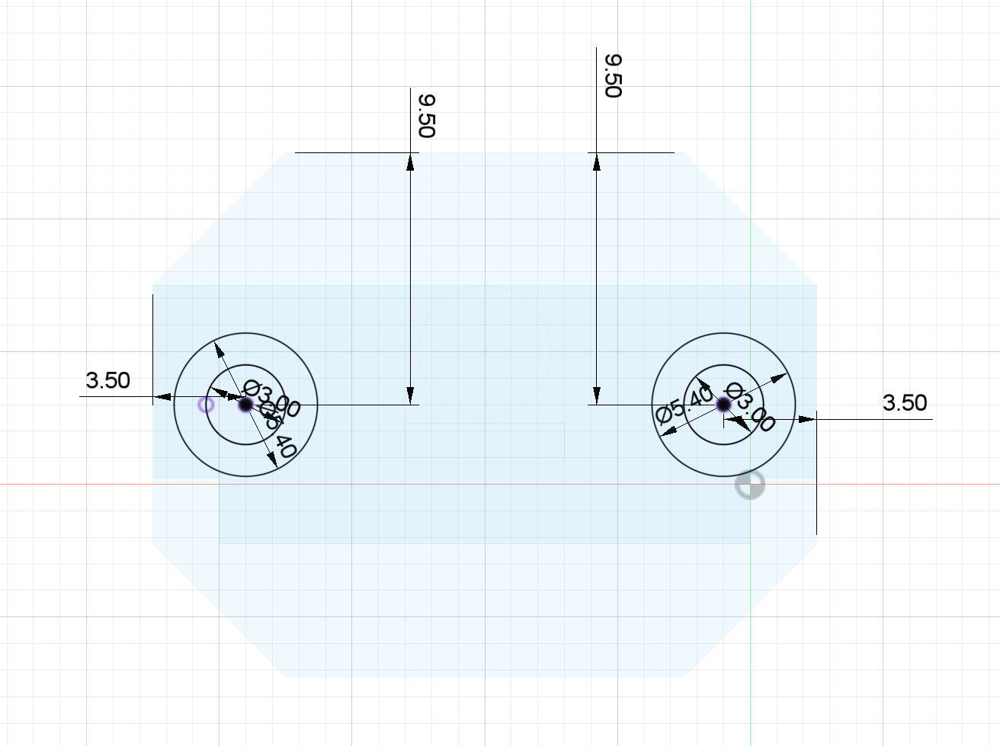
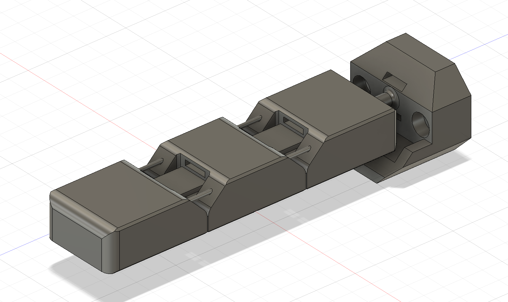
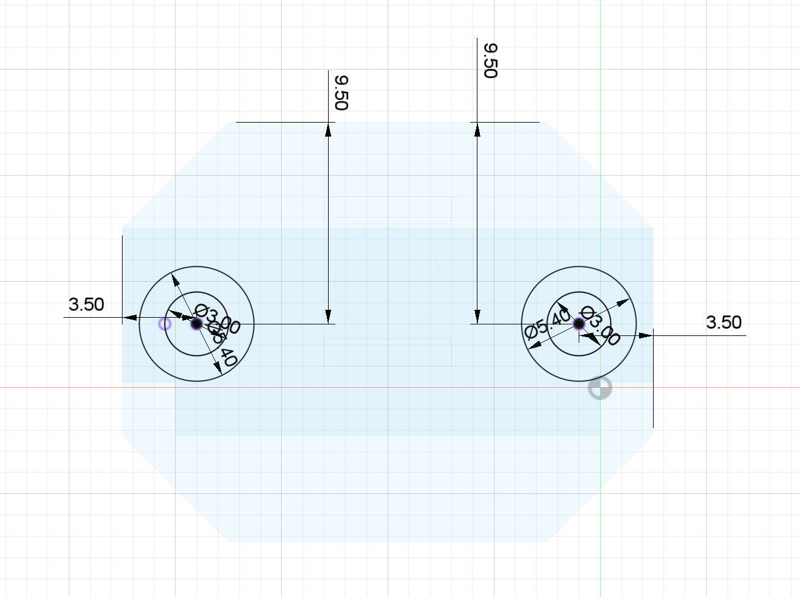
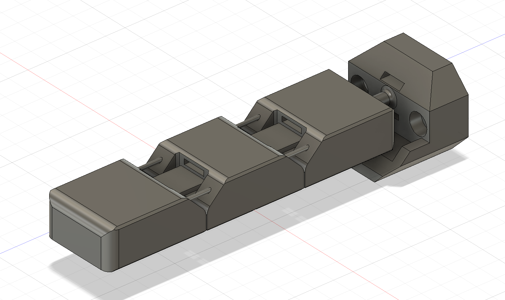
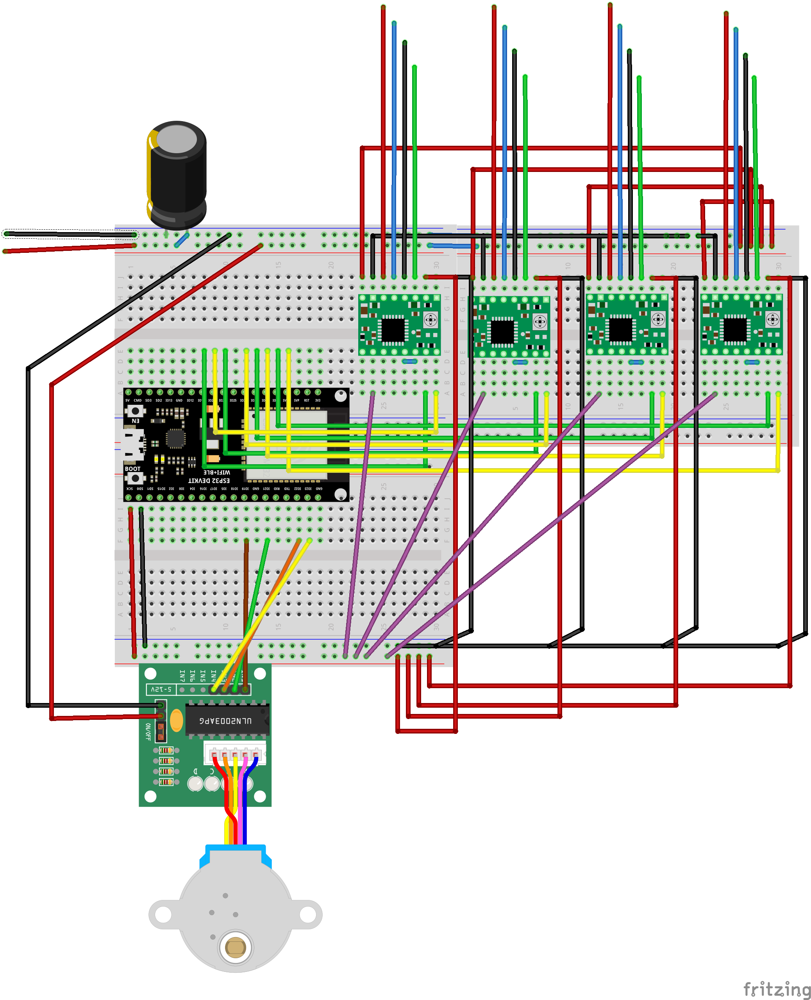
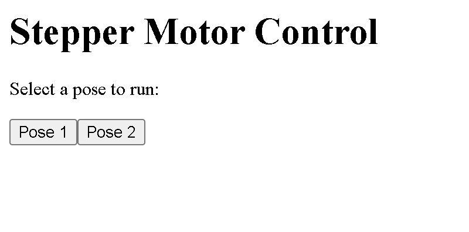

hAndy: An artificial hand experiment
Documentation: Concepts
I've been working on learning ASL for a bit now, and the very first thing I started with, just as anyone, is the ASL alphabet. Now one thing I sometimes tended to struggle with is getting the gestures right, and I personally love learning by example, especially in person. My idea is to make a robot hand that could model those gestures, eliminating the need for an ASL teacher for a visual learner. My first prototype will just be a hand on a base, without any arm for additional movement as that would be too complicated for a base. The ASL alphabet doesn't require any additional movement for gestures other thn the hand itself, so this prototype would be perfect for that purpose. I would also like to implement a camera hand tracking system through my laptop to tell if you get the gesture correct, though that could be a feature for implementation outside of the scope of the class.
In order to create this project, I would likely use 3D printing for most of the parts, and I have been researching print in place techniques for the joints in the fingers. Here are some examples:


Concepts for hand design including PIP joints
For the software, I was thinking of using a value array system for storing positions in the hand. Everytime you would want a new gesture, the hand would reset, and then move into position for the new gesture using the data from the assigned array. This would create an easy way to store the gestures. I could create a library of them that could then be accessed from a seperate program for operating the actuators themselves.
In order to control the fingers on the hand, my thought was to use small servos with a pulley assembly to operate artificial tendons on the fingers. Not only will servos give me precise control, they would also allow me to read their position while manually adjusting them. This would give me an advantage for storing gestures as rather than having to go through trial and error with set values, I could manually move them into position for the gesture and then store those values.
Documentation: Prototyping
Now for the first part of the project, i worked on designing the fingers for the hand. This would be the most complex model of the project, as I needed to design a model that would use TPU in order to create print-in-place joints. Heres a detailed image documentation on the process, with dimensions. The Fusion project file with be at the end, along with other formats.

 



This design has two attachment points using M3 screws, slots for the ariticial tendon/belt, and a joint at the bottom for a possibly splaying feature in the future. It was printed using NinjaFlex TPU on the Prusa Mk3 i3. In order to get the printer to work with this filament, I had to change some settings to make sure the print head would not move too quickly for the filament to work. Here are the print speed settings I used, along with Prusa's built in NinjaFlex preset.
Now in order to actuate the fingers, I chose to use 4 Nema 8 stepper motors, and one 28byj-48 stepper, for their precision. Later on, I will explain why this was a mistake. In order to fit these into my hand design, I needed to translate the vertical rotation into horizontal rotation. This would requre a pair of bevel gears, which I design in Fusion. I won't go into detail on the methods I used here, but if you'd like to see more information, check out the documentation for my 3D printing project, where I designed a pair of bevel gears in the same way.
These gears were printed with regular PLA on a Prusa MK3 i3, using the default speed settings. It took a few attempts to get it right, but in the end they fit perfectly.
Next was desining the belts that would actuate the fingers, while properly fitting on the spool of the gear. For the material, I used TPU again, as it is super flexible and is the perfect material for the tendon pulley system I needed.

Now the last step for the mechanical parts of the project was the palm assembly that would house the gears, steppers, and belts, with the fingers attached. This required some careful measurement of the distances between parts and the sizes of the parts in order to fit them properly whil having everything work. I also made a couple of mistakes here that I will mention later.

This assembly was printed out of PETG due to the materials superior strength and quality compared to PLA, which was required due to some of otherwise structurally weak areas. This design included spaces for threaded brass M3x5mm inserts, along with spaces for M4x5mm inserts for the 28byj-48 stepper. It also included slots for the belts to feed through, press-fit spaces for the stepper motors, and axles for the horizontal bevel gears.
Now with all the parts made, the last step in the assembly was to well, assemble it. As previously mentioned, I used M3 screws for the fingers (2 each), and two M4 screws for the stepper on the thumb section. M3 screws were 10mm, M4's were 5mm. I also added the gears, belts, and steppers, which left the electronics and the programming to do.
As for the circuitry, I used a collection of 4 A4988 stepper motor drivers, one ULN2003 driver, an ESP32 DevKit v1 board, and a 12v powersupply. Here is a diagram of the circuit.
FInally, the programming. I was not able to get an advanced UI fr controlling the hand in place, so I had to stick to barebones methods. For setting up the steppers, I used the AccelStepper library, a very popular and useful tool for controlling multiple steppers at once. In order to control it, I had a system that would arrange stepper motor values into arrays for different poses, and then uses a function to run to those poses. I then created a webserver on the ESP32 that has two buttons for poses, which allows me to remotely control the hand through my laptop. Here's the code:
#include <AccelStepper.h>>
#include <WiFi.h>>
#include <WebServer.h>>
// Replace with your Wi-Fi credentials
#define WIFI_SSID "MAKERSPACE"
#define WIFI_PASSWORD "12345678"
// Define stepper configurations
#define NEMA8_CONFIG 1
#define STEPPER28BYJ_CONFIG 8
// Define GPIO pin numbers for Nema 8 steppers
#define NEMA8_STEP_PIN_1 14
#define NEMA8_DIR_PIN_1 27
#define NEMA8_STEP_PIN_2 26
#define NEMA8_DIR_PIN_2 25
#define NEMA8_STEP_PIN_3 33
#define NEMA8_DIR_PIN_3 32
#define NEMA8_STEP_PIN_4 35
#define NEMA8_DIR_PIN_4 34
// Define GPIO pin numbers for 28BYJ-48 stepper
#define STEPPER28BYJ_PIN1 19
#define STEPPER28BYJ_PIN2 21
#define STEPPER28BYJ_PIN3 22
#define STEPPER28BYJ_PIN4 23
// Create instances of AccelStepper for each stepper
AccelStepper nema8Stepper1(NEMA8_CONFIG, NEMA8_STEP_PIN_1, NEMA8_DIR_PIN_1);
AccelStepper nema8Stepper2(NEMA8_CONFIG, NEMA8_STEP_PIN_2, NEMA8_DIR_PIN_2);
AccelStepper nema8Stepper3(NEMA8_CONFIG, NEMA8_STEP_PIN_3, NEMA8_DIR_PIN_3);
AccelStepper nema8Stepper4(NEMA8_CONFIG, NEMA8_STEP_PIN_4, NEMA8_DIR_PIN_4);
AccelStepper stepper28BYJ(STEPPER28BYJ_CONFIG, STEPPER28BYJ_PIN1, STEPPER28BYJ_PIN3, STEPPER28BYJ_PIN2, STEPPER28BYJ_PIN4);
// Define structure to store stepper positions for each pose
struct Pose {
long nema8Pos1;
long nema8Pos2;
long nema8Pos3;
long nema8Pos4;
long stepper28BYJPos;
};
// Define predefined poses
Pose pose1 = {1000, 2000, 3000, 4000, 5120}; // Example positions for each motor
Pose pose2 = {500, 1500, 2500, 3500, 2560}; // Example positions for another pose
// Create a WebServer instance
WebServer server(80);
// Function to move all steppers to a specific pose
void moveToPose(Pose targetPose) {
nema8Stepper1.moveTo(targetPose.nema8Pos1);
nema8Stepper2.moveTo(targetPose.nema8Pos2);
nema8Stepper3.moveTo(targetPose.nema8Pos3);
nema8Stepper4.moveTo(targetPose.nema8Pos4);
stepper28BYJ.moveTo(targetPose.stepper28BYJPos);
}
// Function to run all steppers to a specific pose
void runToPose(Pose targetPose) {
moveToPose(targetPose);
while (nema8Stepper1.isRunning() || nema8Stepper2.isRunning() || nema8Stepper3.isRunning() || nema8Stepper4.isRunning() || stepper28BYJ.isRunning()) {
nema8Stepper1.run();
nema8Stepper2.run();
nema8Stepper3.run();
nema8Stepper4.run();
stepper28BYJ.run();
}
}
void setup() {
// Start Serial communication
Serial.begin(115200);
// Connect to Wi-Fi
WiFi.begin(WIFI_SSID, WIFI_PASSWORD);
while (WiFi.status() != WL_CONNECTED) {
delay(1000);
Serial.println("Connecting to WiFi...");
}
Serial.println("Connected to WiFi");
Serial.print("IP address: ");
Serial.println(WiFi.localIP());
// Set up web server routes
server.on("/", handleRoot);
server.on("/runPose", handleRunPose);
server.begin();
// Set maximum speed and acceleration for Nema 8 steppers
nema8Stepper1.setMaxSpeed(1000);
nema8Stepper2.setMaxSpeed(1000);
nema8Stepper3.setMaxSpeed(1000);
nema8Stepper4.setMaxSpeed(1000);
nema8Stepper1.setAcceleration(500);
nema8Stepper2.setAcceleration(500);
nema8Stepper3.setAcceleration(500);
nema8Stepper4.setAcceleration(500);
// Set maximum speed and acceleration for 28BYJ-48 stepper
stepper28BYJ.setMaxSpeed(500);
stepper28BYJ.setAcceleration(200);
}
void loop() {
// Handle incoming web requests
server.handleClient();
}
Here's what the webpage looks like:
Now, if you want to see the hand in action, check out the video at the top!
Issues:
Now there are several issues and future additions I want to work on. FIrst of all, in the video, it's clearly seen that the hand needs some assistance in moving from pose to pose. This is because the stepper motors do not have enough torque! Another reason is due to excess friction in the hand assembly and a slight misalignment of parts. Anyways, in the future, I'm lookin to get rid of the stepper motors and replace them either with DC motors with magnetic encoders, or a system of McKibben type muscles using hydralics or other methods.
Other than the construction, I also need to implement better UI. In the future, I'd like this hand to be functional enough to be able to do complex sign language, and maybe even have a conversation using AI and handtracking through a camera.